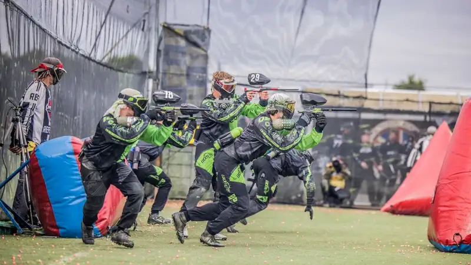

Tips bermain paintball di Batu mencakup memakai pakaian tertutup, mengikuti arahan pemandu, menjaga pelindung wajah tetap terpasang, dan membangun kerja sama tim sejak awal.
- Kenakan pakaian lengan panjang, celana panjang, dan sepatu tertutup yang nyaman.
- Pelindung wajah wajib terpasang selama berada di area permainan.
- Jumlah peluru berbeda antar penyedia: 40 butir pada Batu Adventure (Agustus 2025) dan 50 amunisi pada Pujon Rafting (Maret 2026).
- Komunikasi dan pembagian peran tim lebih menentukan daripada kekuatan fisik.
- Artikel ini bersifat informasi umum; ikuti aturan penyedia dan konsultasikan kondisi kesehatan ke dokter bila perlu.
Apa yang Harus Disiapkan Sebelum Bermain Paintball di Batu?
Sebelum bermain paintball di Batu, siapkan pakaian lengan panjang, celana panjang, sepatu tertutup, pakaian ganti, air minum, dan konfirmasi paket serta titik kumpul dengan penyedia.
Persiapan yang baik membuat permainan lebih nyaman dan aman. Berikut daftar yang bisa dipakai:
- Pakaian: kaus lengan panjang dan celana panjang yang tidak ketat, karena kapsul cat yang mengenai kulit terbuka dapat terasa lebih tidak nyaman.
- Sepatu: pilih sepatu tertutup dengan alas yang tidak licin, karena arena di alam terbuka bisa tidak rata.
- Pakaian ganti: siapkan satu set pakaian bersih untuk setelah permainan.
- Air minum dan camilan: aktivitas fisik di udara sejuk tetap membutuhkan hidrasi.
- Konfirmasi paket: pastikan jumlah peluru, seragam, dan pelindung wajah termasuk dalam paket.
Hindari membawa barang berharga ke arena, dan titipkan pada anggota yang tidak bermain atau di tempat penitipan penyedia.
Perlengkapan Apa yang Biasanya Disediakan Penyedia Paintball di Batu?
Penyedia paintball di Batu umumnya menyediakan marker, seragam, pelindung wajah, body protector, peluru dalam jumlah tertentu, dan pemandu untuk pemain yang mengikuti paket reguler.
Batu Adventure mencantumkan paket yang mencakup 40 butir peluru, senapan marker, seragam, pelindung wajah, body protector, dan pemandu profesional (Agustus 2025). Halaman Batu Malang Rafting per Maret 2026 mencantumkan pembagian dua tim, 50 amunisi per orang, dan wasit di area pertempuran. VendoroutboundBatu Malang Rafting
Pada beberapa penyedia, kostum dapat disewa terpisah. Sebuah penyedia outbound di Malang Raya mencatat sewa kostum lengkap sekitar Rp30.000 sampai Rp50.000 per orang (April 2025). Konfirmasi apakah seragam sudah termasuk dalam paket agar tidak ada biaya tak terduga. Perincian biaya tersedia di harga paintball Batu. First Outbound
Bagaimana Aturan Keselamatan Dasar Saat Bermain Paintball?
Aturan keselamatan dasar paintball adalah selalu memakai pelindung wajah, mengikuti arahan pemandu, tidak membidik dari jarak sangat dekat, dan berhenti segera saat wasit memberi tanda.
Paintball adalah aktivitas yang aman bila dijalankan dengan aturan yang jelas. Pegangan yang disarankan secara umum:
- Jangan melepas pelindung wajah selama berada di area permainan, termasuk saat istirahat singkat di lapangan.
- Ikuti briefing pemandu tentang batas arena, tanda tereliminasi, dan jarak tembak aman.
- Angkat tangan dan berteriak jelas ketika terkena tembakan agar lawan berhenti menembak.
- Jangan mengarahkan marker ke orang di luar permainan, seperti wasit atau penonton.
- Hentikan permainan segera bila wasit memberi sinyal atau ada peserta cedera.
Aturan tepatnya dapat berbeda antar penyedia, jadi utamakan aturan yang diberikan pemandu. Peserta dengan kondisi medis tertentu, seperti masalah jantung, sendi, atau kehamilan, sebaiknya berkonsultasi dengan dokter sebelum bermain. Informasi ini bersifat umum dan bukan pengganti nasihat medis.
Bagaimana Strategi Tim yang Cocok untuk Pemula?
Strategi tim untuk pemula paintball adalah menunjuk satu pemimpin, membagi peran maju dan jaga, berkomunikasi dengan isyarat sederhana, dan memakai penghalang alami sebagai perlindungan.
Halaman Batu Malang Rafting menekankan bahwa akal dan strategi lebih menentukan keberhasilan permainan daripada kekuatan. Prinsip ini relevan bagi pemula. Batu Malang Rafting
Langkah strategi sederhana:
- Tunjuk pemimpin tim. Satu suara mempermudah keputusan cepat di lapangan.
- Bagi peran. Sebagian pemain maju memberi tekanan, sebagian menjaga sisi dan belakang.
- Gunakan isyarat sederhana. Kata kunci pendek lebih mudah dipahami saat berlari.
- Manfaatkan penghalang. Semak, pohon, dan benteng buatan dapat menjadi perlindungan, terutama di arena berpenghalang.
- Hemat peluru. Dengan peluru terbatas, tembakan terarah lebih bernilai daripada tembakan acak.
Strategi bekerja lebih baik bila peserta sudah mengenal medan arena. Ringkasan arena tersedia di panduan lokasi paintball di Batu.
Apa Kesalahan Umum Pemula Saat Bermain Paintball?
Kesalahan umum pemula paintball meliputi memakai pakaian terbuka, menghabiskan peluru terlalu cepat, bermain sendiri tanpa koordinasi, dan mengabaikan arahan pemandu maupun tanda wasit.
Empat kesalahan yang paling sering terjadi:
- Pakaian terlalu terbuka. Kulit yang terbuka lebih rentan terasa sakit saat terkena kapsul.
- Menembak berlebihan. Peluru terbatas, misalnya 40 sampai 50 butir per orang pada paket yang tercatat, sehingga tembakan sembarangan cepat menghabiskan stok.
- Bermain sendiri-sendiri. Tim tanpa koordinasi mudah terkepung.
- Mengabaikan arahan pemandu. Pelanggaran aturan dapat membahayakan diri sendiri dan pemain lain.
Hindari juga membandingkan diri dengan pemain berpengalaman. Pemain baru cukup fokus pada keselamatan, komunikasi, dan kesenangan bermain.
Bagaimana Kondisi Cuaca Batu Memengaruhi Permainan Paintball?
Cuaca sejuk di Batu membuat paintball nyaman dimainkan siang hari, tetapi hujan dapat membuat arena licin, sehingga pemain perlu sepatu beralas kuat dan pakaian ganti.
Batu dikenal berudara sejuk karena berada di kawasan pegunungan. Kondisi ini mengurangi rasa lelah dibanding daerah panas, tetapi tetap perlu minum cukup air.
Saat hujan, tanah di arena hutan atau kebun dapat licin dan jarak pandang menurun. Tanyakan kebijakan penyedia bila hujan turun: apakah jadwal ditunda, dialihkan, atau dilanjutkan. Bawa jas hujan tipis dan pakaian ganti. Untuk rencana lengkap, baca rekomendasi paintball terbaik Batu.
FAQ
Apa yang harus dipakai saat bermain paintball di Batu?
Pakai kaus lengan panjang, celana panjang, dan sepatu tertutup yang nyaman. Pelindung wajah, seragam, dan body protector umumnya disediakan penyedia pada paket reguler, tetapi perlu dikonfirmasi.
Apakah pemula boleh bermain paintball di Batu?
Pemula umumnya boleh bermain bila penyedia menyediakan pemandu, wasit, dan perlengkapan pelindung. Ikuti pengarahan sebelum permainan dan tanyakan batas usia serta syarat kesehatan kepada penyedia.
Berapa peluru yang didapat saat bermain paintball di Batu?
Jumlahnya berbeda antar penyedia. Batu Adventure mencatat 40 butir per orang (Agustus 2025), sedangkan Pujon Rafting mencatat 50 amunisi per orang (Maret 2026).
Arya
penulis artikel yang sudah berpengalaman di dalam dunia wisata outbound Batu Malang.